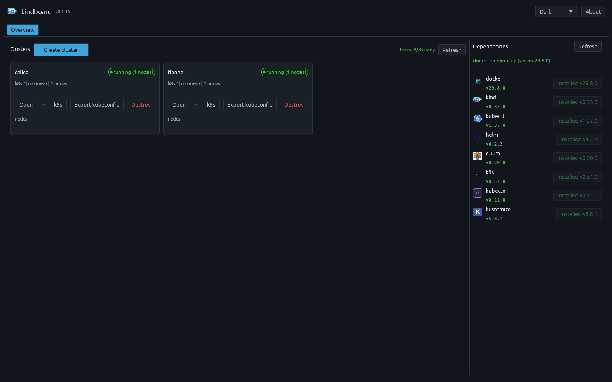
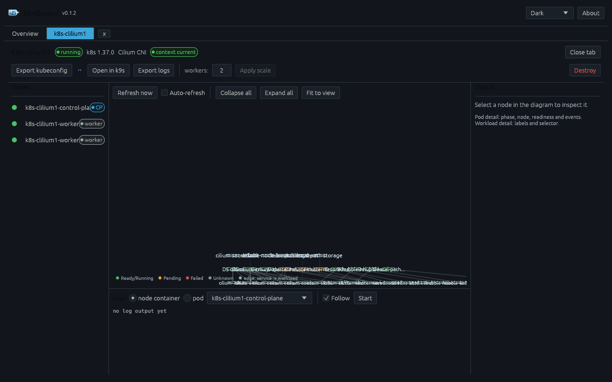
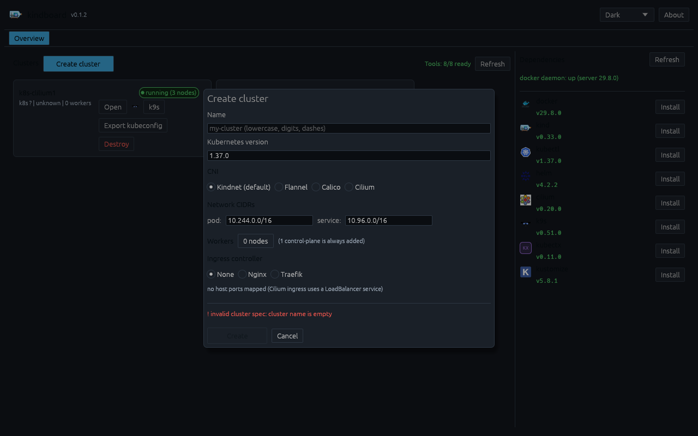
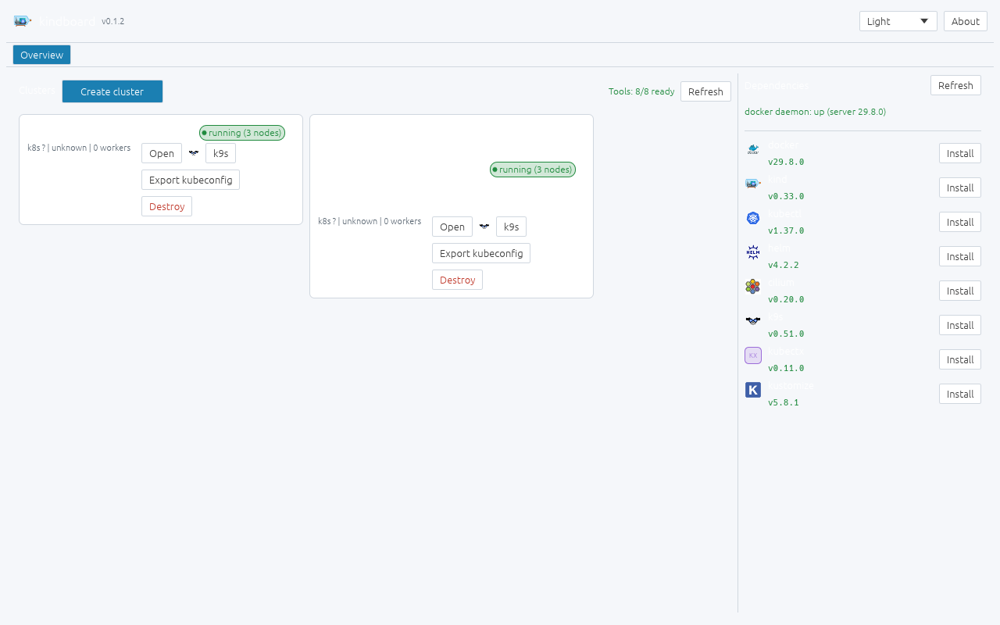
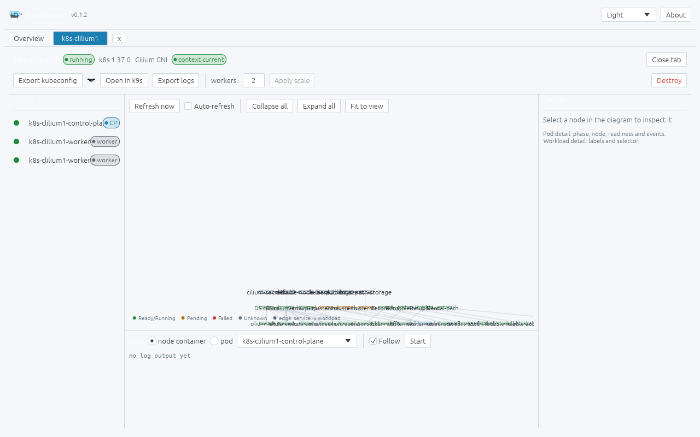
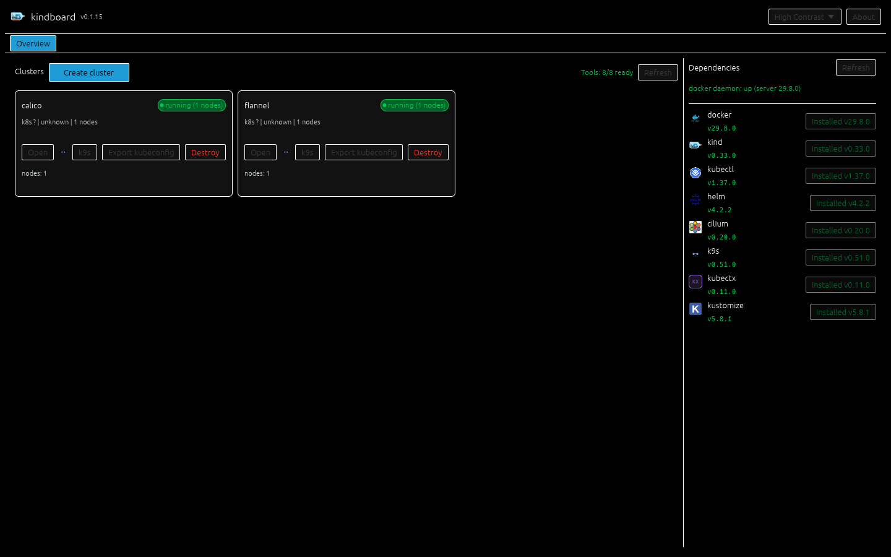

Guided cluster wizard
Name, Kubernetes version, CNI, pod/service CIDRs, worker count and ingress controller — validated live while you type, with Cilium extras (Gateway API, Hubble, clustermesh) one checkbox away.
A project by Orlando Rosa Pereira · Rust · egui · kind · Linux
kindboard wraps kind — Kubernetes in Docker — in a polished desktop interface: create clusters with a guided wizard, watch their live topology, stream logs, install the whole toolchain with one click, and dig into nodes, pods, services and ingress from a diagram you can read. Built as study work for everyone learning Kubernetes and DevOps.
kindboard turns “read the docs, fight the CLI” into “click, watch, learn”.
Name, Kubernetes version, CNI, pod/service CIDRs, worker count and ingress controller — validated live while you type, with Cilium extras (Gateway API, Hubble, clustermesh) one checkbox away.
Namespaces, workloads, pods, services and ingress rendered as a pan/zoom diagram with status colors — the fastest way to see what is actually running in a cluster.
Follow control-plane or pod logs live in the bottom panel, or export the full cluster log bundle with a click for later study.
Docker, kind, kubectl, helm, cilium, k9s, kubectx and kustomize — detected with version badges and installed with a single click, streamed step by step.
Destroy and scale require typing the cluster name. Recreates are guided, cancellable, and every run streams its steps — no silent surprises while you learn.
Export the cluster kubeconfig context, make it current, then jump straight into k9s in a new terminal — kubectl and the terminal stay your friends.
kindnet, Flannel, Calico and Cilium — including Cilium's Gateway API controller, Hubble UI and clustermesh, verified end-to-end on real clusters.
Dark, light and high-contrast themes with the same professional design language — and every view really fits the frame, from 1280×800 down to 640×480.
A clean split between the UI thread and a core worker — the UI never blocks and never touches your cluster files directly.
Rust · egui/eframe
kindboard-core · async runtime
kindboard orchestrates eight proven tools — it detects, installs and versions them for you, but their docs are one click away.
Kubernetes in Docker — every lab cluster is a kind cluster, created and managed end-to-end by the wizard.
kind.sigs.k8s.io ↗The official Kubernetes CLI. kindboard uses it for topology snapshots, and exports contexts for your own terminal.
kubernetes.io/docs/reference/kubectl ↗The container runtime that runs every cluster node as a container — detected and checked by the dependency cockpit.
docs.docker.com ↗The Kubernetes package manager. kindboard keeps it versioned and ready for your charts after a cluster is up.
helm.sh/docs ↗eBPF networking, observability and Gateway API. kindboard drives the CLI, Hubble and clustermesh end-to-end.
docs.cilium.io ↗The terminal UI for managing clusters — kindboard launches it straight from a cluster tab with the right context.
k9scli.io ↗Kubernetes-native configuration management, built into kubectl — available for your own manifests.
kustomize.io ↗Fast context and namespace switching between your clusters and labs — installed and versioned by the cockpit.
github.com/ahmetb/kubectx ↗Real clusters, real screens — click any image to enlarge.






The palette changes; the professional look — cards, strokes, status colors, spacing — does not. Your choice persists across restarts.
The original identity. Deep blue-black surfaces, teal-blue accent, WCAG-checked status colors.
Pale surfaces with darker accents for the same contrast discipline — comfortable in bright rooms.
Pure black surfaces with white strokes and maximum-contrast text — for projectors and vision needs.
Every CNI is provisioned and verified end-to-end by kindboard.
| CNI | Pod networking | Ingress | Gateway API | Hubble UI | Clustermesh | Status |
|---|---|---|---|---|---|---|
| kindnet | default kind CNI | nginx / traefik | — | — | — | default |
| Flannel | VXLAN overlay | nginx / traefik | — | — | — | verified |
| Calico | BGP / IP-in-IP | nginx / traefik | — | — | — | verified |
| Cilium | eBPF datapath | nginx / traefik / cilium | ✓ | ✓ | ✓ | verified |
Cilium runs with kube-proxy replacement, Gateway API v1.6, Hubble relay + UI and clustermesh — including a kernel-aware version pin for newer hosts.
You need Linux or macOS and a working Docker daemon. kindboard detects the rest. Download the v0.1.5 tarball (Linux x86_64), v0.1.5 tarball (macOS Apple Silicon) or v0.1.5 tarball (macOS Intel), verify against the SHA256SUMS, or build from source. macOS binaries are ad-hoc signed (no Apple Developer ID) — on first launch, if Gatekeeper warns, right-click the binary and choose Open.
# download the release tarball for your platform, or build from source
git clone https://github.com/Orpere/kindboard.git
cd kindboard
cargo build --release
./target/release/kindboard # the desktop app
./target/release/kindboard --help # CLI referenceInside the app, a typical first lab looks like this:
Cluster wizard, overview, dependency installation, operation panels.
Live topology diagram, log streaming and export, k9s launch, CNI matrix.
Cilium end-to-end: Gateway API, Hubble UI, clustermesh, kernel-aware pin.
Dark / light / high-contrast themes, full viewport fit (down to 640×480), deps dashboard.
macOS builds (Apple Silicon + Intel) cross-compiled on Linux via osxcross.
Signed macOS binaries (no more Gatekeeper 'damaged' error) + GitHub & LinkedIn icons on this site.
Multi-cluster views, Helm chart library, and your feedback.
{kind=link}
{kind=link}
{kind=link}
{kind=link}
{kind=link}
{kind=link}